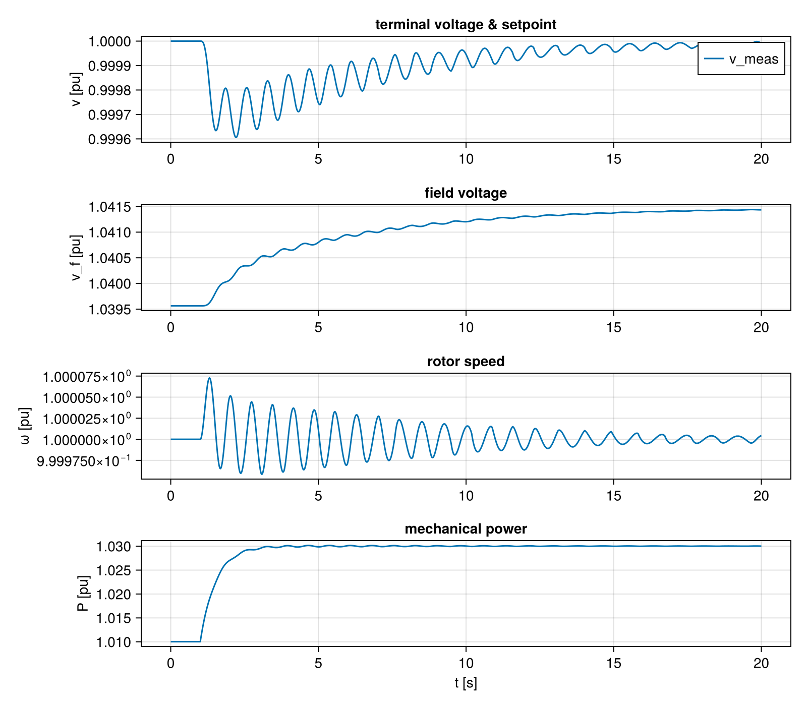

Backward Initialization of a Nested Bus Model
A dynamic simulation has to start from a steady state — every derivative zero, the system at rest. Reaching it takes two steps: a powerflow fixes each bus's voltage and current, and then the internal states and free setpoints of the dynamic models have to be set so that nothing moves.
That second step runs backwards. Normally a model reads its inputs and computes an output; here we know the terminal voltage and current and need the internal states that would have produced them. PowerDynamics can solve this numerically — it seeds the unknowns with guesses and hands the coupled system to a nonlinear solver — and that is often enough. For a large nested bus, though, the solver can struggle when the guesses are poor.
Block by block, the backward step is usually straightforward to write down by hand: each steady-state equation rearranges to give one of its own states or setpoints directly, once you know what the block's output has to be. Rather than leave it all to the solver, you can attach these init formulas to the models themselves. Two ways to do it:
initf— a formula written directly on a variable or parameter, in the component that owns it, andset_initf— the same, but declared by a parent for a variable of one of its subcomponents (the only way to reach inside a subcomponent).
You don't have to commit to exact formulas. The same expressions can instead just seed the solver, via guessf / set_guessf — the guess-side twins of initf / set_initf. They leave the variable free but start it close to the answer, which makes the solve trivial. And since the guess only has to be close, the formulas may be approximate and need not cover everything.
Below we build a generator bus from five small models — a Lag, a PIBlock, a SimpleAVR, a SimpleGov, and a ClassicalMachine — each carrying only its own init formulas. Once they are wired together, the formulas chain up on their own and fix every unknown from the powerflow alone. The result: initialize_from_pf! reports "No free variables!" — no solver runs at all.
The backward step itself starts at the machine: it is the only block touching the terminal, so it turns the powerflow voltage and current into the field voltage and mechanical power its controllers must supply — and from there the chain unwinds outward to the AVR, the governor, and their inner blocks. We build the models in the opposite order, though, from the small reusable pieces up to the machine, so that each one introduces one new idea before the next leans on it. Keep the machine in mind as the anchor everything resolves back to; the How the formulas chain up section at the end walks the finished chain in its true firing order.
╭──────────────────────────────────╮
│ ┏━━━━━━━━━━━━━━━━━━━━━━━━┓ │
Vmeas │ ┃AVR ╭───╮ ┃ │
↑ Efd ┃ ╭───╮ ╭────╮ ╭─←┤Lag├←╂─╯
┏━━━━━━━┷━┓ ╭──╂←┤Lag├←┤ PI ├←(-) ╰───╯ ┃
(t) ┃ ┠←─╯ ┃ ╰───╯ ╰────╯ ╰─←╴Vref ┃
o───┨ Machine ┃ ┗━━━━━━━━━━━━━━━━━━━━━━━━┛
┃ ┠←─╮ ┏━━━━━━━━━━━━━━━━━━━━━━━━┓
┗━━━━━━━┯━┛ │ ┃ Gov ╭─────╮ ┃
↓ │ ┃ ╭───╮ │Droop├─←╴Pref ┃
ωmeas │ ╰──╂←┤Lag├─←─┤ R ├─←──────╂─╮
│ ┃ ╰───╯ ╰─────╯ ┃ │
│ ┗━━━━━━━━━━━━━━━━━━━━━━━━┛ │
╰──────────────────────────────────╯using PowerDynamics, NetworkDynamics, ModelingToolkitBase, SciCompDSL
using PowerDynamics.Library
using ModelingToolkitBase: t_nounits as t, D_nounits as Dt
using ModelingToolkitStandardLibrary.Blocks
using NetworkDynamics: set_mtk_defaults
using OrdinaryDiffEqRosenbrock, OrdinaryDiffEqNonlinearSolve
using CairoMakieTwo building blocks: a lag and a PI controller
Two generic blocks recur all over the bus. The first is a first-order Lag,
\[T\,\dot{x} = K\,u - x, \qquad y = x,\]
the smoothing element behind every measurement and actuator delay in the model.
@component function Lag(; name, defaults...)
@parameters begin
K = 1, [description="gain"]
T = 1, [description="time constant"]
end
@variables begin
u(t), [description="input"]
y(t), [description="output"]
x(t), [guess=0, description="lag state"]
end
eqs = [
T*Dt(x) ~ K*u - x,
y ~ x,
]
sys = System(eqs, t; name)
sys = set_mtk_defaults(sys, defaults)
endThe second block is a PI controller, error $\mathrm{err}$ in, output $y$ out:
\[\dot{x} = \mathrm{err}, \qquad y = K_p\,\mathrm{err} + K_i\,x.\]
The integrator state $x$ is the one that needs a formula. In steady state $x$ has to be whatever makes the output equal the required value, so solve the output equation for it:
\[x := \frac{y - K_p\,\mathrm{err}}{K_i}.\]
That formula uses only the block's own symbols, so it goes right on $x$ as an initf annotation. Its one dependency is the block's own output $y$, which only means something once something outside says what $y$ should be — exactly what the AVR does next.
@component function PIBlock(; name, defaults...)
@parameters begin
K_p, [description="proportional gain"]
K_i, [description="integral gain"]
end
@variables begin
err(t), [description="control error (input)"]
y(t), [description="controller output"]
end
@variables begin
x(t), [guess=0, initf = (y - K_p*err)/K_i, description="integrator state"]
end
eqs = [
Dt(x) ~ err,
y ~ K_p*err + K_i*x,
]
sys = System(eqs, t; name)
sys = set_mtk_defaults(sys, defaults)
sys
endA simple AVR built from the blocks
A measurement lag, the PI regulator, and a field-circuit lag in series:
\[T_m\,\dot{v}_\mathrm{meas} = v_\mathrm{mag} - v_\mathrm{meas}, \qquad T_e\,\dot{v}_f = y_\mathrm{pi} - K_e v_f\]
Three init formulas belong here:
v_meas(a state): at rest the measurement equals what it measures, $v_\mathrm{meas} := v_\mathrm{mag}$.v_ref(a parameter): zero control error at rest, $v_\mathrm{ref} := v_\mathrm{meas}$. Back-computing a free setpoint like this is the bread-and-butter of power-system init.- the field circuit at rest, solved for the PI output: $y_\mathrm{pi} := K_e v_f$ — the output value the PI block was waiting for.
We collect all three in a set_initf block at the end, where every symbol is already in scope. v_meas and v_ref could equally use an inline initf (like the PI block); pi.y is the one that needs set_initf, because it lives inside the PI subcomponent. Setting it is how the AVR tells the PI what its output must be — and the PI's own formula then fills in its state.
@component function SimpleAVR(; name, defaults...)
pars = @parameters begin
T_m, [description="voltage measurement time constant"]
T_e, [description="field circuit time constant"]
K_e, [description="field circuit gain"]
v_ref, [guess=1, description="terminal voltage setpoint"]
end
components = @named begin
v_mag_in = RealInput() # measured terminal voltage
vf_out = RealOutput() # field voltage to the machine
lag_v = Lag(T=T_m) # voltage measurement lag
pi = PIBlock()
lag_f = Lag(K=K_e, T=T_e) # field circuit lag
end
vars = @variables begin
v_meas(t), [guess=1, description="lagged voltage measurement"]
v_f(t), [guess=1, description="field voltage"]
end
eqs = [
lag_v.u ~ v_mag_in.u,
v_meas ~ lag_v.y,
pi.err ~ v_ref - v_meas,
lag_f.u ~ pi.y,
v_f ~ lag_f.y,
vf_out.u ~ v_f,
]
sys = System(eqs, t, vars, pars; name, systems=components)
# Initialization equations
sys = set_initf(sys,
v_meas => v_mag_in.u, # measurement equals the measured value
v_ref => v_meas, # zero control error
pi.y => v_f / K_e, # PI output that holds the field circuit
)
sys = set_mtk_defaults(sys, defaults)
sys
endA simple governor
Droop plus a turbine lag. Again the formula targets a parameter: at rest the turbine gives $P_m$ and the droop sets $P_\mathrm{in} = P_\mathrm{ref} + (1-ω)/R$, so the setpoint is whatever the machine's mechanical power needs it to be:
\[P_\mathrm{ref} := P_m - \frac{1-ω}{R}\]
@component function SimpleGov(; name, defaults...)
pars = @parameters begin
R, [description="droop"]
T_g, [description="turbine time constant"]
P_ref, [guess=1, description="power setpoint"]
end
components = @named begin
ω_in = RealInput() # rotor speed
Pm_out = RealOutput() # mechanical power to the machine
lag = Lag(T=T_g) # turbine lag
end
vars = @variables begin
P_m(t), [guess=1, description="mechanical power"]
P_in(t), [description="turbine input power"]
end
eqs = [
P_in ~ P_ref + (1 - ω_in.u)/R,
lag.u ~ P_in,
P_m ~ lag.y,
Pm_out.u ~ P_m,
]
sys = System(eqs, t, vars, pars; name, systems=components)
# The governor's one init formula: the setpoint follows from the power the machine needs.
sys = set_initf(sys,
P_ref => P_m - (1 - ω_in.u)/R
)
sys = set_mtk_defaults(sys, defaults)
sys
endThe classical machine
The machine is where the backward chain starts: it is the only block touching the terminal, so it turns the powerflow voltage and current into everything else. From the internal emf
\[e = u + (R_s + \mathrm{j} X'_d)\,i\]
it reads off the rotor angle and the field voltage it must be fed, and from the electrical torque, the mechanical power:
\[δ := \operatorname{atan}(e_i, e_r), \qquad v_f := |e| = \sqrt{e_r^2 + e_i^2}, \qquad P_m := ω\,τ_e\]
Here v_f and P_m are the machine's own inputs — it simply states "for this terminal condition my inputs must be these." Once everything is wired up they turn out to be the same variables as avr₊v_f and gov₊P_m, so these two formulas end up initializing the AVR and the governor.
@component function ClassicalMachine(; name, defaults...)
pars = @parameters begin
R_s, [description="stator resistance"]
X′_d, [description="d-axis transient reactance"]
H, [description="inertia constant"]
# The frequency base is a *system* quantity: rather than taking it as a
# constructor argument, the component declares a local shadow that is
# structurally bound to the bus's `systembase`, and is filled in at compile time.
ωbase, [bound_to = :systembase₊ωbase, description="System frequency base [rad/s]"]
ωframe, [bound_to = :systembase₊ωframe, description="Global dq frame speed [pu]"]
end
components = @named begin
terminal = Terminal()
vf_in = RealInput()
Pm_in = RealInput()
v_mag_out = RealOutput()
ω_out = RealOutput()
end
vars = @variables begin
ω(t)=1, [description="rotor speed [pu]"]
V_d(t), [description="d-axis voltage"]
V_q(t), [description="q-axis voltage"]
I_d(t), [description="d-axis current"]
I_q(t), [description="q-axis current"]
τ_e(t), [description="electrical torque"]
v_mag(t), [description="terminal voltage magnitude"]
e_r(t), [description="internal emf, real part"]
e_i(t), [description="internal emf, imaginary part"]
δ(t), [guess=0, description="rotor angle"]
v_f(t), [guess=1, description="field voltage (input)"]
P_m(t), [guess=1, description="mechanical power (input)"]
end
T_to_loc(α) = [ sin(α) -cos(α); cos(α) sin(α)]
T_to_glob(α) = [ sin(α) cos(α); -cos(α) sin(α)]
eqs = [
# name the inputs locally
v_f ~ vf_in.u
P_m ~ Pm_in.u
# Park transformations
[terminal.u_r, terminal.u_i] .~ T_to_glob(δ)*[V_d, V_q]
[I_d, I_q] .~ T_to_loc(δ)*[terminal.i_r, terminal.i_i]
# swing equation; δ is measured against the global dq frame, which rotates at ωframe [pu]
Dt(δ) ~ ωbase*(ω - ωframe)
2*H*Dt(ω) ~ P_m/ω - τ_e
τ_e ~ (V_q + R_s*I_q)*I_q + (V_d + R_s*I_d)*I_d
# magnetic equations
0 ~ V_q + R_s*I_q + X′_d*I_d - v_f
0 ~ V_d + R_s*I_d - X′_d*I_q
# internal emf e = u + (R_s + j X′_d) i, in the global frame
e_r ~ terminal.u_r + R_s*terminal.i_r - X′_d*terminal.i_i
e_i ~ terminal.u_i + R_s*terminal.i_i + X′_d*terminal.i_r
# outputs
v_mag ~ sqrt(V_d^2 + V_q^2)
v_mag_out.u ~ v_mag
ω_out.u ~ ω
]
sys = System(eqs, t, vars, pars; name, systems=components)
# The machine's init formulas
sys = set_initf(sys,
δ => atan(e_i, e_r), # rotor angle from the internal emf
v_f => sqrt(e_r^2 + e_i^2), # field voltage the machine must be fed
P_m => ω * τ_e, # mechanical power the machine must be fed
)
sys = set_mtk_defaults(sys, defaults)
sys
endCompose and compile
CompositeInjector wires matching RealInput/RealOutput connector names together and hooks the machine's terminal to a shared terminal.
@named machine = ClassicalMachine(; R_s=0.01, X′_d=0.3, H=5)
@named avr = SimpleAVR(; T_m=0.02, T_e=0.5, K_e=1.0, pi₊K_p=2, pi₊K_i=1)
@named gov = SimpleGov(; R=0.05, T_g=0.5)
gen = CompositeInjector([machine, avr, gov]; name=:gen)
mtkbus = MTKBus(gen; name=:genbus)
genbus = compile_bus(mtkbus; vidx=2, pf=pfPV(V=1, P=1))VertexModel :genbus PureStateMap() @ Vertex 2
├─ 2 inputs: [busbar₊i_r, busbar₊i_i]
├─ 8 states: [gen₊gov₊lag₊x≈0, gen₊avr₊lag_f₊x≈0, gen₊avr₊pi₊x≈0, gen₊avr₊lag_v₊x≈0, gen₊machine₊ω=1, gen₊machine₊δ≈0, busbar₊u_r≈1, busbar₊u_i≈0]
| with diagonal mass matrix [1, 1, 1, 1, 1, 1, 0, 0]
├─ 2 outputs: [busbar₊u_r≈1, busbar₊u_i≈0]
├─ 18 params: [busbar₊Vbase=1, systembase₊Sbase=100, systembase₊ωbase=314.16, systembase₊ωframe=1, gen₊machine₊R_s=0.01, gen₊machine₊X′_d=0.3, gen₊machine₊H=5, gen₊avr₊T_m=0.02, gen₊avr₊T_e=0.5, gen₊avr₊K_e=1, gen₊avr₊v_ref≈1, gen₊avr₊lag_v₊K=1, gen₊avr₊pi₊K_p=2, gen₊avr₊pi₊K_i=1, gen₊gov₊R=0.05, gen₊gov₊T_g=0.5, gen₊gov₊P_ref≈1, gen₊gov₊lag₊K=1]
└─ 1 InitFormula cluster:
explicitly initializes 7/9 variables (via 1 pinned obs) from seeds [busbar₊i_i, busbar₊i_r, busbar₊u_i, busbar₊u_r, gen₊machine₊ω + 6 already set params]
Powerflow model :pvbus with [busbar₊Vbase=1, systembase₊Sbase=100, systembase₊ωbase=314.16, systembase₊ωframe=1, pv₊P=1, pv₊V=1]The compiled model prints the dataflow it worked out: all eight formulas end up in one connected group, fed only by the four interface values plus ω.
How the formulas chain up
None of the five models knows about the others, yet once they are wired together the eight formulas form a single chain — and nobody arranged them. Two things make that work. Connecting two ports makes their variables the same variable, so the machine's formula for its input v_f automatically becomes the initializer for avr₊v_f. And where one formula needs a value another formula produces, they resolve in order.
Written out, the eight formulas with what each one reads ($\leftarrow$):
\[\begin{aligned} \textbf{machine:}\quad & \delta && := \operatorname{atan}(e_i, e_r) &&\leftarrow u_r, u_i, i_r, i_i\\ & v_f \;\left[= v_f^{\mathrm{avr}}\right] && := \textstyle\sqrt{e_r^2+e_i^2} &&\leftarrow u_r, u_i, i_r, i_i\\ & P_m \;\left[= P_m^{\mathrm{gov}}\right] && := \omega\,\tau_e &&\leftarrow \omega,\; \delta,\; u, i\\[0.4em] \textbf{avr:}\quad & v_\mathrm{meas} && := v_\mathrm{mag} &&\leftarrow \delta,\; u \quad(\text{Park})\\ & y_{\mathrm{pi}} && := K_e\,v_f^{\mathrm{avr}} &&\leftarrow v_f^{\mathrm{avr}}\\ & v_\mathrm{ref} && := v_\mathrm{meas} &&\leftarrow v_\mathrm{meas}\\[0.4em] \textbf{gov:}\quad & P_\mathrm{ref} && := P_m^{\mathrm{gov}} - (1-\omega)/R &&\leftarrow P_m^{\mathrm{gov}},\; \omega\\[0.4em] \textbf{pi:}\quad & x && := (y - K_p\,\mathrm{err})/K_i &&\leftarrow y_{\mathrm{pi}},\; v_\mathrm{ref},\; v_\mathrm{meas} \end{aligned}\]
The $[= v_f^{\mathrm{avr}}]$ marks a machine input that the wiring makes identical to the composite's own variable. Every value on the far right is an interface quantity or $ω$, so starting from the powerflow the whole chain unwinds top to bottom — which is exactly the order the verbose log below reports.
A minimal scenario
Machine against a slack bus, with a step on the governor power setpoint at t = 1.
slackbus = compile_bus(PowerDynamics.VariableFrequencySlack(name=:slack); vidx=1, pf=pfSlack(V=1))
line = compile_line(MTKLine(PiLine(; name=:piline, R=0.01, X=0.1, B_src=0, B_dst=0)); src=1, dst=2)
set_callback!(genbus, PresetTimeComponentCallback(
1, ComponentAffect([], [:gen₊gov₊P_ref]) do u, p, ctx
p[:gen₊gov₊P_ref] += 0.02
end))
nw = Network([slackbus, genbus], line)Network with 9 states and 38 parameters
├─ 2 vertices (2 unique types)
└─ 1 edges (1 unique type)
Edge-Aggregation using SequentialAggregator(+)
1 callback set across 1 vertex and 0 edgesInitialize
Watch the verbose output: the formulas fire in order and the run ends with No free variables! — the operating point was computed outright, not solved for.
initialize_from_pf!(nw; verbose=true, subverbose=[VIndex(2)])Initialize VIndex(1) -> 0.0
Initialize VIndex(2)
- Additional defaults:
- :busbar₊u_r = 0.99494
- :busbar₊u_i = 0.10049
- :busbar₊i_i = -0.14962
- :busbar₊i_r = -0.98998
- De-aliased guesses (5 conflicting dropped):
- :busbar₊terminal₊i_i ⇒ :busbar₊i_i ( 0)
- :busbar₊terminal₊i_r ⇒ :busbar₊i_r ( 0)
- :gen₊avr₊v_f ⇒ :gen₊avr₊lag_f₊x ( 1) dropped, class holds 0
- :gen₊avr₊v_mag_in₊u ⇒ :gen₊machine₊v_mag ( 0)
- :gen₊avr₊v_meas ⇒ :gen₊avr₊lag_v₊x ( 1) dropped, class holds 0
- :gen₊gov₊P_m ⇒ :gen₊gov₊lag₊x ( 1) dropped, class holds 0
- :gen₊gov₊ω_in₊u ⇒ :gen₊machine₊ω ( 0)
- :gen₊machine₊P_m ⇒ :gen₊gov₊lag₊x ( 1) dropped, class holds 0
- :gen₊machine₊v_f ⇒ :gen₊avr₊lag_f₊x ( 1) dropped, class holds 0
- InitFormulas set:
- :gen₊machine₊δ = 0.39391 (via gen₊machine₊δ = atan(gen₊machine₊e_i, gen₊machine₊e_r))
- :gen₊avr₊lag_f₊x = 1.0396 (via gen₊machine₊v_f = sqrt(gen₊machine₊e_i^2 + gen₊machine₊e_r^2))
- :gen₊gov₊lag₊x = 1.01 (via gen₊machine₊P_m = gen₊machine₊τ_e*gen₊machine₊ω)
- :gen₊avr₊lag_v₊x = 1 (via gen₊avr₊v_meas = gen₊avr₊v_mag_in₊u)
- :gen₊avr₊v_ref = 1 (via gen₊avr₊v_ref = gen₊avr₊v_meas)
- :gen₊avr₊lag_f₊u = 1.0396 (obs) (via gen₊avr₊pi₊y = gen₊avr₊v_f / gen₊avr₊K_e)
- :gen₊avr₊pi₊x = 1.0396 (via gen₊avr₊pi₊x = (gen₊avr₊pi₊y - gen₊avr₊pi₊K_p*gen₊avr₊pi₊err) / gen₊avr₊pi₊K_i)
- :gen₊gov₊P_ref = 1.01 (via gen₊gov₊P_ref = gen₊gov₊P_m + (-1 + gen₊gov₊ω_in₊u) / gen₊gov₊R)
- No free variables! Residual 1.3668035872266426e-16
Initialize EIndex(1) -> 0.0
Initialized network with residual 1.3668035872266426e-16!Simulate
Because we hit the steady state exactly, the run sits perfectly flat until the setpoint step at t = 1 — then it responds and settles.
prob = ODEProblem(nw, NWState(nw), (0, 20))
sol = solve(prob, Rodas5P())
let
fig = Figure(size=(800, 700))
ax1 = Axis(fig[1,1]; ylabel="v [pu]", title="terminal voltage & setpoint")
lines!(ax1, sol; idxs=VIndex(2, :gen₊avr₊v_meas), label="v_meas")
axislegend(ax1)
ax2 = Axis(fig[2,1]; ylabel="v_f [pu]", title="field voltage")
lines!(ax2, sol; idxs=VIndex(2, :gen₊avr₊v_f))
ax3 = Axis(fig[3,1]; ylabel="ω [pu]", title="rotor speed")
lines!(ax3, sol; idxs=VIndex(2, :gen₊machine₊ω))
ax4 = Axis(fig[4,1]; ylabel="P [pu]", xlabel="t [s]", title="mechanical power")
lines!(ax4, sol; idxs=VIndex(2, :gen₊gov₊P_m))
fig
end
This page was generated using Literate.jl.